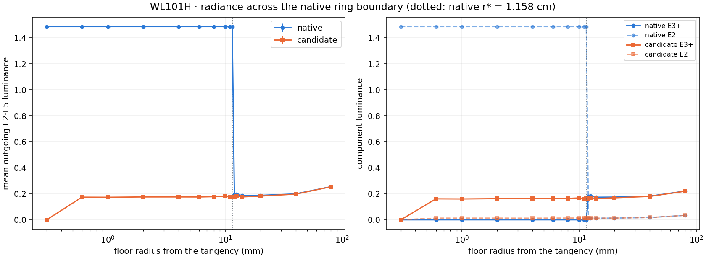
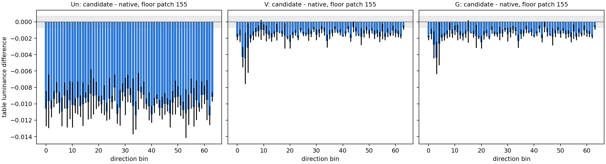
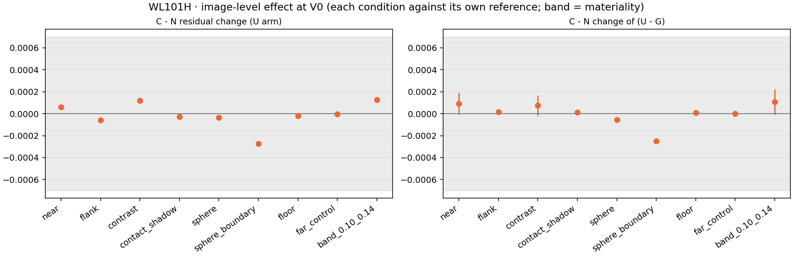

Verdict: NOT_QUALIFIED
| contact_slot_material | {"Un": true, "V": true, "G": true} |
| U_G_comparison_material | {"slot_bins": true, "near": false, "contrast": false, "contact_shadow": false, "sphere": false, "sphere_boundary": false} |
| lobes_material | {"reference_shift": false, "U_residual_change": false} |


